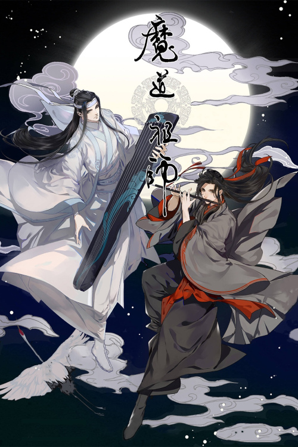

Tiểu thuyết có cốt truyện xoay quanh hai nhân vật chính là Ngụy Anh (Ngụy Vô Tiện) và Lam Trạm (Lam Vong Cơ); bối cảnh truyện là thế giới tiên hiệp có tiên môn bách gia, trong đó Vân Mộng Giang thị, Cô Tô Lam thị, Lan Lăng Kim thị, Kỳ Sơn Ôn thị, Thanh Hà Nhiếp thị là năm nhà lớn nhất. Trong năm đại thế gia, Kỳ Sơn Ôn thị là gia tộc mạnh nhất, áp bức các tộc còn lại. Ôn thị ngang ngược, tội ác tày trời, lại như "mặt trời ban trưa", khiến sinh linh đồ thán. Thế gia nghĩa sĩ trên giang hồ phát động “ Xạ Nhật Chi Chinh ”, vì trượng nghĩa mà hợp lực thảo phạt Ôn gia. “Di Lăng Lão Tổ” Nguỵ Vô Tiện mặc dù lập được công lớn, nhưng lại tu luyện tà đạo, bị kẻ gian bày mưu hãm hại, cuốị cùng người đời thóa mạ, vạn quỷ phản phệ chết không toàn hồn. Sau 13 năm, Nguỵ Vô Tiện lại lần nữa xuất hiện, cùng Cô Tô Lam Thị - Lam Vong Cơ tương ngộ. Từ đây những ân oán tiền kiếp và bí ẩn trong giang hồ dần dần được hé lộ.